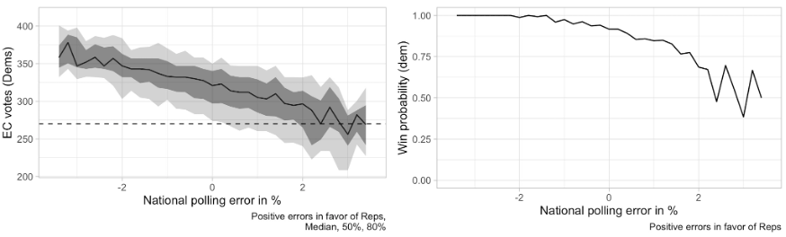

To note 1
1 Some of the material here came from posts on our blog, Statistical Modeling, Causal Inference, and Social Science.
We thank Merlin Heidemanns for the analysis of uncertainty in election forecasting and the participants in the Turing Institute workshop, Navigating the garden of forking paths: theoretical foundations for interactive data analysis in data-driven science, https://www.turing.ac.uk/research/theory-and-method-challenge-fortnights/navigating-garden-forking-paths-theoretical
I recently participated in a workshop on theoretical foundations for interactive data analysis in data-driven science with the theme, "Navigating the garden of forking paths." The issue here was not the impact of forking paths on p-values (Gelman and Loken, 2013) but rather how to better understand the open-ended nature of exploratory analysis and discovery, a topic that we've also been thinking about regarding statistical modeling workflow (Gelman et al., 2020).
As a contribution to this workshop, I have compiled here some thoughts, which I've divided into two categories: statistical practice and communication. "Statistical practice" includes graphical exploration as well as more traditional model-based inference, and "communication" includes the sociological processes of science.
A recurring theme here is the connection between research goals, scientific discovery, and mathematical/computational tools.
Some thoughts on forking paths in statistical practice:
Statistical practice as scientific exploration. When you do applied statistics (more generally, "interactive data analysis"), you’re acting like a scientist. You form hypotheses, gather data, run experiments, modify your theories, etc. Here, we're not talking about hypotheses of the form “theta = 0” or whatever; we're talking about hypotheses such as, “N = 200 will be enough for this study” or "A parallel coordinates plot might reveal an unexpected pattern in these data" or “Instrumental variables should work on this problem” or “We can safely use the normal approximation here” or “We really need to include a measurement-error model here” or “The research question of interest is unanswerable from the data we have here; what we really need to do is . . .”, etc. Existing treatments of statistical practice and workflow (including in our own textbooks) do not fully capture the way that the steps of statistical design, data collection, analysis, and decision making feel like science.
The trail of breadcrumbs. To understand and trust such an analysis it is helpful to have a “trail of breadcrumbs” connecting data, theory, and conclusions. Here's a story to illustrate this point. Gartzke (2007) performed an analysis to distinguish between two theories in international relations: the "democratic peace" (which postulates that democratic countries do not go to war) and the "capitalist peace" (under which the key factor is trade, not political deliberation). As Gartzke puts it, "both democracies and capitalist dyads appear never to fight wars. Still, determining more about these relationships, and their relative impact on war, requires that we move beyond cross tabs." Based on his regression analysis, he concludes that the evidence suggests that "capitalism, and not democracy, leads to peace." The question then arises: Where in the data can this distinction be made? In regression analysis predicting war (more generally, "militarized interstate disputes") from numerical measures of democracy, capitalism, and various other characteristic dyads of countries over time. Capitalism and democracy are highly correlated in the data, so for the regression to untangle their predictive effects, there should be some warring dyads that were democratic but not capitalistic. The decisive data perhaps come from the wars in 1990s in the former Yugoslavia, when Serbia, Bosnia, and Croatia were democracies but did not yet have capitalist economic systems. The point of this story for our purposes here is that when a data-driven analysis leads to a discovery, the logical next step is to open the black box and understand what in the data led to this conclusion. Some analysis and visualization tools are well-suited to this process; with other methods, such as regression analysis, this opening-up process is not so easy, and this represents an important path for future research.
Moving beyond the push-a-button, take-a-pill model of science. There is a replication crisis in much of science, and the resulting discussion has focused on issues of procedure (preregistration, publication incentives, and so forth) and statistical concepts such as p-values and statistical significance. But what about the scientific theories that were propped up by these unreplicable findings—what can we say about them? Many of these theories correspond to a simplistic view of the world, with push-button interventions that are summarized by their "treatment effects." Real-world effects vary among people and over time, and estimates of localized effects will typically be very noisy. As a consequence, it's unrealistic to expect theory-free inference to yield stable estimates. Statistical significance and forking paths are the least of our problems here. Instead we recommend considering mechanistic or process-based modeling, where possible measuring and modeling intermediate outcomes. A simple example is to model tumor sizes in a cancer drug rather than just looking at a binary success/failure outcome.
Exploratory data analysis and implicit models. Data visualization and exploratory analysis have often been thought to be unrelated to or in competition with statistical modeling. When thought of in terms of workflow, though, exploration and modeling can be seen as closely related. Start with the idea that exploratory analysis is for discovering unexpected patterns in data: as Tukey (1972) put it, “graphs intended to let us see what may be happening over and above what we have already described." Lurking behind the unexpected is the expected, and indeed the better we can model our data, the more we can learn from our data graphics. Models guide our explanations; conversely, exploratory discoveries can be viewed as model checks (Gelman, 2004, Hullman and Gelman, 2021).
Here's a standard paradigm of data analysis, which we do not like because we prefer to think of all data analysis as exploratory:
- Step 1: "Exploratory data analysis." Some plots of raw data, possibly used to determine a transformation.
- Step 2: The "main analysis"—maybe model-based, maybe non-parametric, whatever. It is typically focused, not always recognized as exploratory.
- Step 3: That’s it.
We can do better than Step 3 by integrating Steps 1 and 2. A good model can make exploratory data analysis much more effective and, conversely, we'll understand and trust a model a lot more after seeing it displayed graphically along with data.
The fractal nature of scientific revolutions. Scientific progress is self-similar (that is, fractal): each level of abstraction, from local problem solving to big-picture science, features progress of the “normal science” type, punctuated by occasional revolutions. The revolutions themselves have a fractal time scale, with small revolutions occurring fairly frequently (every few minutes for an exam-type problem, up to every few years or decades for a major scientific consensus). At the largest level, human inquiry has perhaps moved from a magical to a scientific paradigm. Within science, the dominant paradigm has moved from Newtonian billiard balls, to quantum, to evolution and population genetics, to neural computation. Within, say, psychology, the paradigm has moved from behaviorism to cognitive psychology. On smaller scales, too, we see paradigm shifts. For example, in working on an applied problem, we typically will start in a certain direction, then suddenly realize we were thinking about it wrong, then move forward, etc etc. In a consulting setting, this reevaluation can happen several times in a couple of hours. At a slightly longer time scale, we might reassess our approach to an applied problem after a few months, realizing there was some key feature we were misunderstanding. This normal-science and revolution pattern ties into a Bayesian workflow cycling between model building, inference, and model checking.
The multiverse. The point of the "forking paths" metaphor in statistics is that multiple comparisons can be a problem, even when there is no "fishing expedition" or "p-hacking" and the research hypothesis was posited ahead of time. Indeed, often we can look at existing literature or even a single published article containing multiple studies to get a sense of the "multiverse" spanned by possible choices of data coding and analysis. Steegen et al. (2016) give an example of a literature in evolutionary psychology in which fertility was assessed in five different ways, menstrual onset was defined in three different ways, relationships were categorized in three different ways, and so forth, leading to 168 different options.
Forking paths are a good thing. It is good to analyze data in different ways! The mistake is to choose just one. Rather than reporting the best result and then adjusting the analysis for multiple comparisons, we recommend performing all of some set of comparisons of interest and then using multilevel modeling to learn from the ensemble. This is what we mean when we say that we usually don't have to worry about multiple comparisons (Gelman, Hill, and Yajima, 2012). "Forking paths" can be taken as a criticism of naive interpretations of p-values; it is not a criticism of flexible data analysis and exploration in science.
Visualization of uncertainty. Just as the individual beliefs and behaviors are best understood in a social context, probabilities are best understood in relation to the probabilities of other events. For example, in the 2020 U.S. election, Joe Biden was far ahead in national and state polls, but the probabilistic forecast needed to account for the possibility of systematic polling error. These graphs, which show probabilistic forecasts of Biden's electoral vote conditional on polling error, are more informative than unconditional distributions.

In the event, the polling error was about 2.5 percentage points, and the final election was close.
Variation. Often what we learn from interactive data analysis are patterns of variation: a treatment that works in some settings but not others, geographic variation, behavioral differences between young and old people, and so forth. This is not about "forking paths" in the sense of different approaches to a single problem, but rather that data-driven science can lead us to see complexity, and this can be facilitated by modern workflows. To the extent that data graphics is automated and systematized (as with the grammar of graphics and the tidyverse in R), analysts can make graphs with less friction and will be more able to discover interesting and important variation.
Statistics as the science of defaults. Applied statistics is sometimes concerned with one-of-a-kind problems, but statistical methods are typically intended to be used in routine practice. This is recognized in classical theory (where statistical properties are evaluated based on their long-run frequency distributions) and in Bayesian statistics (averaging over the prior distribution). In computer science, machine learning algorithms are compared using cross-validation on benchmark corpuses, which is another sort of reference distribution.
Statisticians have standard estimates for all sorts of models, books of statistical tests, and default settings for everything. Statistical software has default settings, and even the choice of package to be used could be considered a default. More generally, much of the job of statisticians is to devise, evaluate, and codify methods that will be used by others in routine practice.
Automatic behavior is not a bad thing! When we make things automatic, users can think at the next level of abstraction. For example, push-button linear regression allows researchers to focus on the model rather than on how to solve a matrix equation, and it can even take them to the next level of abstraction and think about prediction without even thinking about the model. As teachers and users of research, we then are (rightly) concerned that lack of understanding can be a problem, but it’s hard to go back. We might as well complain that the vast majority of people drive their cars with no understanding of how those little explosions inside the engine make the car go round.
Dense data and sparse model, or sparse data and dense model. Tibshirani (2014) writes of the "bet on sparsity" principle: "The l1 methods assume that the truth is sparse, in some basis. If the assumption holds true, then the parameters can be efficiently estimated using l1 penalties. If the assumption does not hold—so that the truth is dense—then no method will be able to recover the underlying model without a large amount of data per parameter." This reasoning applies to a world in which data are dense and underlying reality is sparse, a setting that arises in many areas of science and engineering. For example, a surveillance video has a huge amount of information which can be summarized in very few dimensions as the motion of a few people over time; or a long gene sequence can be studied with the goal of classifying people into a small number of disease-risk categories.
In other applications, data are sparse and the underlying reality is dense. In social and environmental sciences, pretty much no effects being studied are zero—but many of these effects will be lost in the noise if we attempt to learn them from data. For such problems, we do not want to assume or bet on sparsity; rather, we should accept complexity and variation while recognizing the limitations of our data and models. If we do use regularization techniques that induce sparsity when working in social science and policy, we should not kid ourselves that we have discovered fundamental sparse structures. It is helpful here to consider the thought experiment, "What would happen if we got tons and tons more data?" In that case we would surely discover further structure in the world. At its best, data-driven science tells us what we can learn right now, not what can be discovered in the future.
Simulation-based experimentation. Data analysis can be expensive in time and effort, and this can lead to us thinking that if a project took a lot of work then it has to be good. To state that belief is to mock it, yet it persists.
How can we avoid what might be called the "fallacy of effort"? We recommend simulation-based experimentation, which requires the following steps: (1) create a fake world, (2) simulate parameters and data from this world, (3) analyze the simulated data and get inference for the underlying parameters, (4) compare those inferences to the parameter values simulated in step 2. This can be done systematically in a Bayesian context (Modrák et al., 2024) but in practice informal checking can work just fine, in that problems will often show up in a simple simulation.
Creating a fake world is not easy—if analyzing a dataset is like playing Sim City, simulating fake data is like writing Sim City—but this effort can be well worth it, not just for the benefit of uncovering problems and the increased confidence arising from successful recovery, but also because constructing a simulation experiment is a way to clarify our thinking. Indeed, we often recommend simulating fake data before embarking on any real-world data collection process, to get a sense of what can realistically be learned from a proposed design.
Some thoughts on forking paths in communication:
Your most important collaborator. Your most important collaborator is you, six months ago—and she doesn’t answer email. One implication of this principle is that presentation graphics should not be so different from exploratory research graphics. When graphing data just for yourself, you want to make the patterns as clear as possible, which is also what you want for other audiences. A clear message and purpose, a crisp and transparent design, readability—these things are important for you too.
More generally, the collaboration principle points to the value of understanding the paths of our interactive data analyses: this includes keeping some record of what is being done, along with the development of software that facilitates a workflow with parallel analyses.
What is the purpose of the methods section? A frustrating aspect of science papers is that the methods section doesn't fully describe what was actually done. It can take a lot of sleuthing to figure out how to reconstruct published results---and that doesn't even get into all the things that got tried that didn't get written up! Even when you include any published supplementary information, you still typically don't see key details such as the wording and ordering of survey questions. Even if you set aside the possibility of scientific misconduct, people have difficulty writing up exactly what they did. With masters or doctoral thesis, you'll often find that the bulk of the thesis is review material: students are writing up the book they wish they'd been given to read at the outset of the project. Then when you get to the parts of the thesis that describe the new material, you won't see the data you need.
Why is it that researchers have such difficulty writing up exactly what they did? Setting aside fraud, writing up what you did should be the easiest thing to do! We have a couple of theories on this: (1) Students are used to reading textbooks and other materials written in general terms. It's natural for them to imitate that style when they start to write for publication; (2) The ultimate goal of science writing is to increase collective understanding, but the immediate goal is acceptance (by the journal editors, the thesis committee, the boss, or whoever decides whether the report goes forward). And, for various reasons, it doesn't seem that this acceptance requires or is even facilitated by a full and clear description of what you actually did.
Preregistration as a floor, not a ceiling. There is a concern that preregistration stifles innovation: if Fleming had preregistered his study, he never would’ve noticed the penicillin mold, etc. Our response is that preregistration is a floor, not a ceiling. Preregistration is a list of things you plan to do, that’s all; it does not stop you from doing more. If Fleming had followed a pre-analysis protocol, that would’ve been fine: there would have been nothing stopping him from continuing to look at his bacterial cultures. It can be really valuable to preregister, to formulate hypotheses and simulate fake data before gathering any real data. To do this requires assumptions—it takes work!—and we think it’s work that’s well spent. And then, when the data arrive, do everything you’d planned to do, along with whatever else you want to do.
Honesty and transparency are not enough. Reproducibility is great, but if a study is too noisy (with the bias and variance of measurements being large compared to any persistent underlying effects), that making it reproducible won’t solve those problems. Reproducibility (or, more generally, “honesty and transparency”) has been oversold, and we don't want researchers to think that, just because they drink the reproducibility elixir, that their studies will then be good. Reproducibility makes it harder to fool yourself and others, but it does not turn a hopelessly noisy study into good science. We want to be able to say that a particular project is hopeless without implying that the researchers involved are being dishonest. Lots of people do research that’s honest, transparent, and useless! That’s one reason we prefer to speak of “forking paths” rather than “p-hacking”: it’s less of an accusation and more of a description.
"Rigor" as a slogan and the Chestertonian principle. Extreme skepticism is a form of credulity. This principle arises in politics, as with conspiracy theorists, and also in scientific method, where concerns of rigor can lead to a conceptual vacuum that is filled by something closer to pure speculation. Statistics textbooks will sometimes imply that causal inference is impossible without randomized experimentation and that population inference is impossible without random sampling—a position that is ridiculous given that real-world surveys of humans are almost never random samples or even close to that.
Rigor is important, though! Rigorous reasoning connects our analyses and conclusions to our theories (the trail of breadcrumbs mentioned earlier in this document). Understanding how our samples are not random is the first step toward adjusting for biases and quantifying possible errors. We should not think of rigor as being opposed to interactive data analysis.
Feeling disrespected. Those of us who work in data visualization and data-analysis workflow have long felt disrespected by theoreticians and proponents of often-spurious rigor. This can be annoying. For example, a theoretical statistician once wrote, "The particle physicists have left a trail of such confidence intervals in their wake. Many of these parameters will eventually be known (that is, measured to great precision). Someday we can count how many of their intervals trapped the true parameter values and assess the coverage. The 95 percent frequentist intervals will live up to their advertised coverage claims." Maybe not! Based on the historical record, physicists’ intervals have not lived up to their advertised coverage (see Wasserman, 2008, and Gelman, 2008). Conversely, theorists can feel dissed by practitioners who don't recognize the ways in which applied work has benefited from theoretical understanding. The relevance to the present discussion is that when considering communication we need to consider some of the social background context of specific scholarly disputes. There is a sort of Escher stairway, in which visualization experts feel disrespected by theorists, and theorists feel disrespected by applied practitioners.
The conditions leading to the replication crisis in psychology and other fields. Just as it is said that our modern megafires arise from having forests full of trees, all ready to ignite and preserved in that kindling-like state by firefighting policies that have favored preservation of existing trees over all else, so has the replication crisis been fueled by a decades-long supply of highly vulnerable research articles, kept in their pristine state through an active effort of leaders of the academic psychology establishment to suppress criticism of any published work. We are not claiming that psychology is worse than other fields; rather, psychology has lots of experiments which are easy to replicate (unlike in fundamentally observational fields such as economics and political science) and which are inexpensive in time, money, and lives (unlike in medicine or education research). Other fields also have woods that are ready to burst into flames, but the matches have not yet been struck in sufficient quantity.
Goals/audience, solutions, self-criticism. It is easy when working on a problem to jump in the middle. In our workflow we should remember to step back and consider our ultimate and proximate goals. The ultimate goal might be to make some policy decision or to crack some scientific problem; the proximate goal might be to bring a project to a conclusion—maybe better to say a stable intermediate state—so that it is publishable. And that is not a cynical goal: if research is worth doing, it's worth sharing. Also relevant is the audience. When writing, you should choose your target audience, while realizing that others may read your document too. And you should also criticize the solutions you are offering. Even in a purely positive presentation, criticisms can take the form of delineating the boundaries outside of which your solutions will not work.
The politics of the science reform movement. The core of the science reform movement (the Open Science Framework, etc.) has had to make all sorts of compromises with conservative forces in the science establishment in order to keep them on board. Within academic psychology, the science reform movement arose from a coalition between radical reformers (who viewed replications as a way to definitely debunk prominent work in social psychology they believed to be fatally flawed) and conservatives (who viewed replications as a way to definitively confirm findings that they considered to have been unfairly questioned on methodological grounds). As often in politics, this alliance was unstable and has in turn led to "science reform reform" movements from the "left" (viewing current reform proposals as too focused on method and procedure rather than scientific substance) and from the "right" (arguing that the balance has tipped too far in favor of skepticism).
The importance of stories. Storytelling is central to science, not just as a tool for broadcasting scientific findings to the outside world, but also as a way that we as scientists understand and evaluate theories. For this purpose, a story should be anomalous and immutable; that is, it should be surprising, representing some aspect of reality that is not well explained by existing models of the world, and have details that stand up to scrutiny.
This raises a paradox: learning from anomalies seems to contradict usual principles of science and statistics where we seek representative or unbiased samples. We resolve this paradox by placing learning-within-stories into a hypothetico-deductive (Popperian) framework, in which storytelling is a form of exploration of the implications of a hypothesis. This back-and forth connects to the above-discussed idea of the fractal nature of scientific revolutions and, more generally, to the forking paths of interactive data exploration.
The foxhole fallacy and the pluralist's dilemma. In an article entitled, "No Bayesians in foxholes," the statistician Leo Breiman (1997) made the confident and false statement that, "when big, real, tough problems need to be solved, there are no Bayesians." It would be more accurate to say that Breiman was not aware of any such examples and indeed seemed to put in some effort to avoid finding them. What's funny is that he couldn't just say that he had made great contributions to statistics, and others had made important contributions to applied problems using Bayesian methods. He had to go beyond his expertise and exhibit the "foxhole fallacy," whereby someone does not seem to be able to believe that other people can legitimately hold views different from theirs. Related to this is the pluralist's dilemma: how to recognize that our approach is just one among many, that our own embrace of this approach is contingent on many things beyond our control, while still expressing the reasons why we prefer our approach to the alternatives (at least for the problems we work on). When considering scientific exploration and communication, we keep returning to this issue.
Taking political attitudes seriously. A challenge in science communication is when people have preconceived notions and are not open to following the data or willing to accept empirical results. This is related to the "law of small numbers" fallacy identified by Tversky and Kahneman (1971), that there is an expectation that all evidence on a topic should go in the same direction.
When it comes to policy analysis, there are two ways to resolve this problem. From one direction, we want to develop tools for better communication of research results so that strong findings can be persuasive to skeptics (while continuing the work of science reform that is focused on assuring that weak evidence is not overstated). From the other direction, we have to accept that some stakeholders are not about to change their policy positions, perhaps because of legitimate external reasons. For example, a study could be performed estimating the economic effects of some social policy, but a policy maker might already favor (or oppose) the policy because of concerns of cost, ethics, or other outcomes. Even in a pure science context, a researcher might have a prior commitment to a line of research that is too strong to be shaken by any single study.
What to do when working with people who are expected to hold a fixed position? We propose to avoid the usual frustrations by accepting this position and flipping it around, asking the question: Given that this larger policy or theoretical position is fixed, how would these people incorporate new evidence into their understanding? The point is to avoid painting people into a corner. For example, suppose someone is committing to thinking that a certain drug treatment is a good idea, and then data come in showing no effect. Allow the believer to say something like, "Even if this drug does not work in this particular setting, I believe it works elsewhere," or "Even if this drug is ineffective, I support that a general policy of approving more treatments will on average lead to improvements by encouraging innovation," or whatever. There is no need to agree with such a position; the point is that this kind of exchange moves the discussion forward, rather than everything getting stalled on a refusal to accept new evidence or a refusal to discount a discredited evidential claim.
References
Leo Brieman (1997). No Bayesians in foxholes. IEEE Expert 12 (6), 21-24.
Erik Gartzke (2007). The capitalist peace. American Political Science Review 51, 166-191.
Andrew Gelman (2004). Exploratory data analysis for complex models (with discussion). Journal of Computational and Graphical Statistics 13, 755-779.
Andrew Gelman (2008). Objections to Bayesian statistics (with discussion and rejoinder). Bayesian Analysis 3, 445-477.
Andrew Gelman, Jennifer Hill, and Masanao Yajima (2012). Why we (usually) don't have to worry about multiple comparisons. Journal of Research on Educational Effectiveness 5, 189-211.
Andrew Gelman and Eric Loken (2013). The garden of forking paths: Why multiple comparisons can be a problem, even when there is no "fishing expedition" or "p-hacking" and the research hypothesis was posited ahead of time. link to pdf
Andrew Gelman, Aki Vehtari, Daniel Simpson, Charles C. Margossian, Bob Carpenter, Yuling Yao, Paul-Christian Bürkner, Lauren Kennedy, Jonah Gabry, and Martin Modrák (2020). Bayesian workflow. link to pdf
Jessica Hullman and Andrew Gelman (2021). Designing for interactive exploratory data analysis requires theories of graphical inference (with discussion). Harvard Data Science Review 3 (3).
Martin Modrák, Angie H. Moon, Shinyoung Kim, Paul Bürkner, Niko Huurre, Kateřina Faltejsková, Andrew Gelman, and Aki Vehtari (2024). Simulation-based calibration checking for Bayesian computation: The choice of test quantities shapes sensitivity. Bayesian Analysis.
Robert Tibshirani (2014). In praise of sparsity and convexity. In Past, Present, and Future of Statistical Science, ed. Xihong Lin, Christian Genest, David Banks, Geert Molenberghs, David Scott, and Jane-Ling Wang. CRC Press.
John W. Tukey (1972). Some graphic and semigraphic displays. In Statistical Papers in Honor of George W. Snedecor, ed. T. A. Bancroft. Iowa State University Press.
Amos Tversky and Daniel Kahneman (1971). Belief in the law of small numbers. Psychological Bulletin 76, 105-110.
Larry Wasserman (2008). Comment on "Objections to Bayesian statistics," by Andrew Gelman. Bayesian Analysis 3, 463-465.
Citation
@online{gelman2024,
author = {Gelman, Andrew},
title = {Forking Paths and Workflow in Statistical Practice and
Communication},
date = {2024-06-23},
url = {https://theory4ida.github.io/tmcf/posts/04-forkingpaths/},
langid = {en}
}